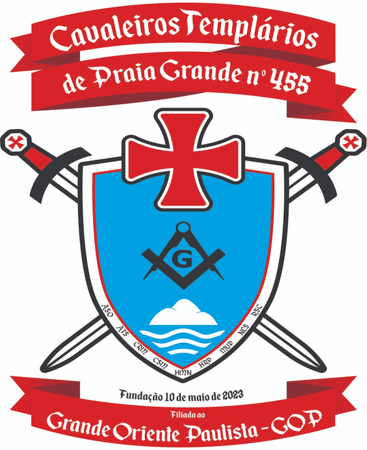

Nossa história
Fundada em 10 de maio de 2023, a A∴R∴L∴S∴ Cavaleiros Templários de Praia Grande nº 455 é a única Loja do Grande Oriente Paulista em atividade na cidade de Praia Grande.
O nome e a identidade visual da Loja inspiram-se na tradição que associa a origem da Maçonaria aos Cavaleiros Templários, ordem de cavalaria medieval cujos ideais de honra, coragem, fé e serviço inspiram nossos trabalhos.
Desde a fundação, a Loja vem consolidando seu quadro com sessões regulares, iniciações e ações de benemerência voltadas à comunidade de Praia Grande e da Baixada Santista.
Dados da Loja
Nome: A∴R∴L∴S∴ Cavaleiros Templários de Praia Grande
Número: 455
Fundação: 10 de maio de 2023
Potência: Grande Oriente Paulista (GOP) – COMAB
Templo: Rua do Maçom, 907 – Vila Sônia, Praia Grande – SP
O brasão
Cada elemento do brasão da Loja carrega um significado:
- Escudo: forma clássica medieval, associada aos Templários.
- Esquadro e compasso com a letra “G”: os símbolos mais conhecidos da Maçonaria, ao centro do escudo.
- Cruz de Malta: no topo e no pomo das espadas, reforçando a identidade de cavalaria.
- Espadas cruzadas: ao fundo, em referência aos “Cavaleiros da Espada Celeste”.
- Morro do Xixová e as ondas do mar: na base do escudo, homenagem ao brasão oficial do município de Praia Grande.
- Iniciais dos fundadores: discretamente inseridas nas bordas externas do escudo (conheça os fundadores).
- Tipografia e faixas: letras góticas medievais modernizadas; as faixas superior e inferior imitam os estandartes templários.

As cores
Irmãos fundadores
Em 10 de maio de 2023, nove Irmãos fundaram a Loja. Suas iniciais estão gravadas na borda do nosso brasão.
Nosso hino
O Hino da A∴R∴L∴S∴ Cavaleiros Templários de Praia Grande nº 455, de autoria do Ir∴ Robson Imbernon Cortez, M∴M∴, foi composto para expressar os ideais maçônicos e é inspirado no simbolismo templário.
Na Praia Grande, o templo nasceu,
Com luz, saber e devoção.
Cavaleiros da paz e do bem,
Guardando a fé no coração.
Com a espada da honra na mão,
E o compasso da retidão,
Erguemos pilares de amor,
No templo da iluminação.
Fraternos irmãos, de passo fiel,
Unidos em nobre missão.
Servimos à vida, à justiça e à luz,
Guiados por justa razão.
Templários! Irmãos de um só ideal,
Marchamos com força e lealdade.
A Verdade nos guia com brilho imortal,
Na senda da Luz, da Fé, da Fraternidade!